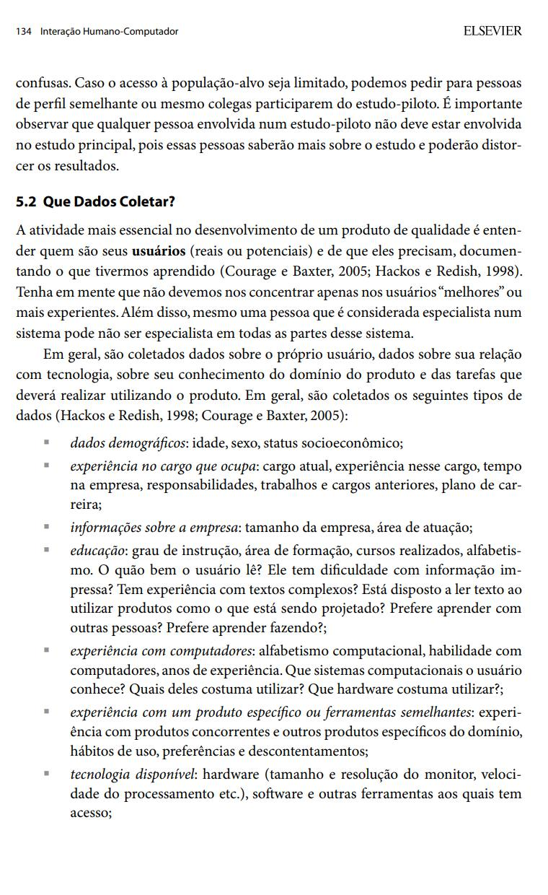
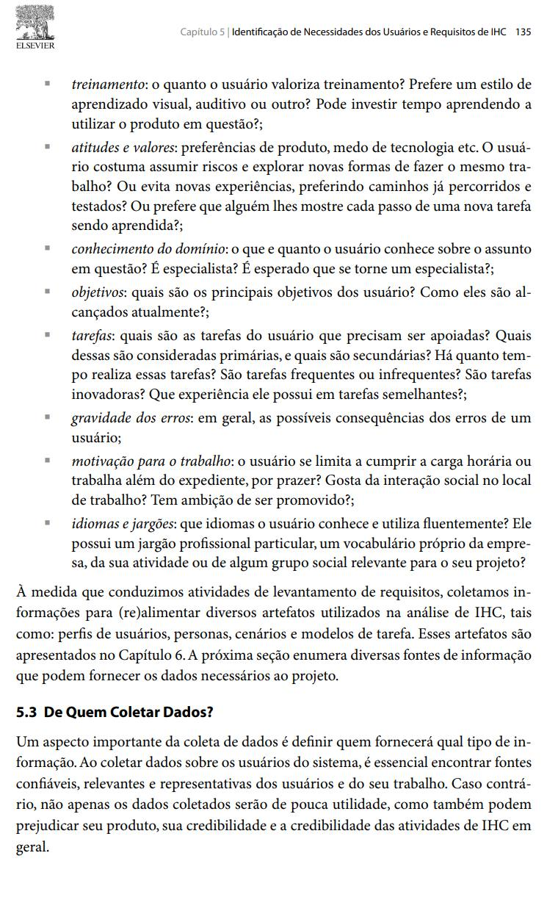
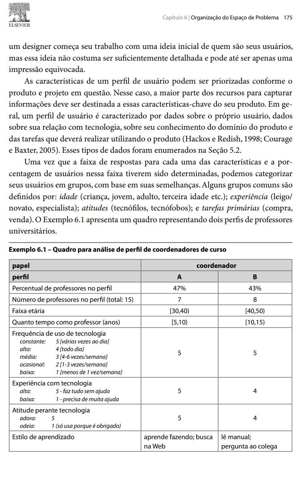

3. Perfil de usuário
Autor: Victor Andreozzi de La Rocque Couto · Revisor: Felipe Lopes Pedroza
Entrega: 2, Perfil do Usuário, Personas e Análise de Tarefas (parte individual, feita em 27/11/2026 a partir dos artefatos que Victor elaborou na Entrega 2 e na Entrega 5) · Funcionalidade de Victor no projeto: Avaliação de Disciplinas
Outros artefatos desta parte: 1. Visão geral e planejamento · 2. Coleta por brainstorming e aspectos éticos · 4. Persona Talita Farias · 5. Cenário da Avaliação de Disciplinas · 6. HTA da Avaliação de Disciplinas · 7. CTT da Avaliação de Disciplinas · 8. Verificação com as listas
1. Introdução
Perfil de usuário é “uma descrição detalhada das características dos usuários cujos objetivos devem ser apoiados pelo sistema” (Barbosa e Silva (2010, p. 174). Esta página parte dos nove perfis de usuário do documento do grupo, que vêm das entrevistas e dos grupos de foco, e mostra como cada um usa a Avaliação de Disciplinas: quem consulta as avaliações antes de montar a grade e quem avalia as disciplinas que já cursou. Os atributos comuns aos oito perfis de estudante foram detalhados para a funcionalidade com o brainstorming com 10 estudantes (2. Coleta por brainstorming e aspectos éticos).
O livro lista os tipos de dados que caracterizam um perfil, a partir de Hackos e Redish (1998) e de Courage e Baxter (2005) (Barbosa e Silva (2010, p. 134–135), e propõe agrupar os usuários por idade, experiência, atitudes e tarefas primárias (p. 175). As Figura 6, Figura 7 e Figura 8 mostram esses trechos.

Fonte: BARBOSA, S. D. J.; SILVA, B. S. Interação Humano-Computador. Rio de Janeiro: Elsevier, 2010. Página: 134, Capítulo 5. Identificação de Necessidades dos Usuários e Requisitos de IHC, seção 5.2.

Fonte: BARBOSA, S. D. J.; SILVA, B. S. Interação Humano-Computador. Rio de Janeiro: Elsevier, 2010. Página: 135, Capítulo 5. Identificação de Necessidades dos Usuários e Requisitos de IHC, seção 5.2.

Fonte: BARBOSA, S. D. J.; SILVA, B. S. Interação Humano-Computador. Rio de Janeiro: Elsevier, 2010. Página: 175, Capítulo 6. Organização do Espaço de Problema, seção 6.1.
2. Atributos do perfil
A Tabela 7 preenche cada tipo de dado do livro para o estudante que usa a Avaliação de Disciplinas, com os valores que valem para os oito perfis de estudante do grupo; o que muda de um perfil para outro está na Tabela 8. A última coluna indica de onde saiu cada valor, com as letras explicadas na legenda abaixo da tabela.
| Tipo de dado (p. 134–135) | Valor no perfil | Origem |
|---|---|---|
| Dados demográficos | Estudantes de graduação da UnB, de 18 a 27 anos, de todos os campi e cursos; a sessão teve estudantes de cursos da área da saúde, como Medicina Veterinária | B, G |
| Ocupação, papel e responsabilidades (no lugar de “cargo”) | Estudante matriculado, responsável por montar a própria grade a cada semestre e por cumprir os pré-requisitos; ao fim do semestre, pode avaliar as disciplinas que cursou. Experiência: do 1º ao último semestre | B, G |
| Instituição (no lugar de “empresa”) | Universidade de Brasília, com matrícula pelo SIGAA e mais de 3.300 usuários ativos no NoFluxo UnB | G |
| Educação e leitura | Ensino médio completo, graduação em curso. Leem bem, mas evitam textos longos durante a matrícula; preferem notas e comentários curtos | B |
| Experiência com computadores | Alta no celular; os participantes exploraram o site sozinhos, sem instrução, e usaram o modo visitante | B |
| Experiência com produtos semelhantes | Usam o SIGAA a contragosto (“qualquer coisa que evite que eu entre no SIGAA”); trocam opiniões sobre disciplinas em conversas e grupos; um participante comparou a ideia a um “Letterboxd das disciplinas” | B |
| Tecnologia disponível | Celular como dispositivo principal na sessão; computador em casa ou nos laboratórios para planejar a matrícula | B, E |
| Treinamento | Não querem treinamento; aprendem explorando (“dá para ir descobrindo as coisinhas”) | B |
| Atitudes e valores | Gostam de tecnologia e do NoFluxo UnB; desconfiam de números sem explicação (questionaram como a dificuldade é calculada); querem anonimato para opinar sobre professores | B, E |
| Conhecimento do domínio | Conhecem as próprias disciplinas e professores, mas não sabem como colegas avaliaram as que ainda vão cursar; ingressantes conhecem pouco as regras acadêmicas | B, G |
| Objetivos | Montar uma grade viável, sem juntar disciplinas difíceis no mesmo semestre, e ajudar os próximos estudantes com a própria experiência. Hoje fazem isso perguntando a veteranos | B |
| Tarefas | Primária: consultar a dificuldade e a cobrança das disciplinas antes da matrícula (uma vez por semestre, com várias consultas). Secundária: avaliar as disciplinas cursadas ao fim do semestre | B |
| Gravidade dos erros | Média: uma avaliação errada (disciplina ou professor trocados) distorce a média vista pelos colegas; uma escolha de grade mal informada pode atrasar o curso | B, E |
| Motivação | Ajudar colegas e não repetir o próprio semestre difícil; motivação coletiva, sem recompensa | B, E |
| Idiomas e jargões | Português; jargão acadêmico da UnB: fluxo, grade, trancar, IRA, optativa, ementa, cobrança do professor | B |
Fonte: Victor Andreozzi de La Rocque Couto (2026). A legenda da coluna “Origem” está logo abaixo da tabela.
Legenda da coluna “Origem” da Tabela 7
B — brainstorming de 25/09/2026, com 10 estudantes (2. Coleta por brainstorming e aspectos éticos)
G — documento do grupo: perfis de usuário e atributos dos perfis
E — avaliações da Avaliação de Disciplinas com estudantes nas Entregas 5 a 7 (storyboard, análise de tarefas e protótipo de alta fidelidade)
3. Os perfis do grupo na Avaliação de Disciplinas
O livro agrupa os usuários por idade, experiência, atitudes e tarefas primárias, como no quadro do Exemplo 6.1 (Barbosa e Silva (2010, p. 175). O grupo já fez esse agrupamento para os nove perfis, na Tabela 43 dos atributos dos perfis, com a faixa de 18 a 27 anos para todos. A Tabela 8 mantém esses perfis e mostra, para cada um, a experiência e a atitude que pesam na Avaliação de Disciplinas e as tarefas primárias na funcionalidade. O perfil de cada participante do brainstorming não foi registrado, então a tabela vem das descrições do grupo e não de uma contagem por perfil.
| Perfil do grupo | Experiência com disciplinas e professores | Atitude | Tarefas primárias na Avaliação de Disciplinas | Persona do elenco |
|---|---|---|---|---|
| Perfil 1 — Ingressante | Ainda não cursou nenhuma disciplina e não conhece os professores | Tem vergonha de perguntar a colegas; confia nas notas de quem já cursou | Consultar as médias e os comentários das disciplinas do próximo semestre. Só passa a avaliar depois do primeiro semestre | Caio Ferreira |
| Perfil 2 — Fluxo regular | Cursou as disciplinas da grade sugerida, na ordem prevista | Quer rapidez e confirmação, sem susto | Consultar as disciplinas do próximo semestre antes de cada matrícula e avaliar as que acabou de cursar | Bruna Castro |
| Perfil 3 — Fora do fluxo / atrasado | Reprovou em disciplinas e vai refazer algumas | Quer sentir que está no controle do próprio curso | Consultar a dificuldade e a cobrança para não juntar disciplinas difíceis no semestre de recuperação e escolher com quem refazer | Larissa Mendes |
| Perfil 4 — Fluxo adiantado | Cursa disciplinas de semestres futuros, com poucos colegas da mesma etapa para perguntar | Busca autonomia sem risco | Consultar as disciplinas de semestres futuros antes de adiantá-las | Yasmin Prado |
| Perfil 5 — Reintegrado | Ficou anos fora do curso; disciplinas e professores podem ter mudado | Está inseguro e tem medo de errar de novo | Consultar as avaliações mais recentes das disciplinas que ainda faltam | Eduardo Sales |
| Perfil 6 — Mudança de curso / dupla habilitação | Cursou disciplinas em dois cursos, com professores diferentes | Acha a própria situação confusa e quer clareza | Avaliar as disciplinas cursadas nos dois cursos e consultar as do novo curso | Talita Farias |
| Perfil 7 — Mobilidade acadêmica / equivalência externa | Cursou um semestre em outra instituição | Quer clareza e se frustra com a demora das equivalências | Consultar as disciplinas da UnB que ainda vai cursar e avaliar as que cursou na UnB | Talita Farias |
| Perfil 8 — Formando | Já cursou quase todas as disciplinas; é quem mais tem o que avaliar | Quer a segurança de que nada vai passar despercebido | Avaliar as disciplinas cursadas e consultar as optativas que faltam para a grade final | Diego Rocha |
| Perfil 9 — Administrador | Não consulta nem avalia como estudante | Quer que os dados estejam corretos | Moderar os comentários das avaliações e manter os dados das disciplinas | Helena Duarte |
Fonte: Victor Andreozzi de La Rocque Couto (2026), a partir dos perfis de usuário, dos atributos dos perfis e das personas do grupo.
Os oito perfis de estudante consultam e avaliam; o que muda é o peso de cada tarefa. O Perfil 1 só consulta, os Perfis 3, 4 e 5 consultam mais do que avaliam, e os Perfis 6, 7 e 8 são os que mais têm o que avaliar. O Perfil 2 faz as duas coisas a cada semestre. Essa diferença é a base dos grupos da seção 4.
4. Grupos de atributos da Avaliação de Disciplinas
Esta seção vale apenas para a Avaliação de Disciplinas. Os grupos abaixo não substituem os perfis de usuário do grupo, que continuam valendo para todo o NoFluxo UnB. Eles reúnem os mesmos perfis pela tarefa primária que cada um tem nesta funcionalidade, e não devem ser usados para as outras funcionalidades do sistema.
Seguindo o quadro do Exemplo 6.1 (Barbosa e Silva (2010, p. 175), a Tabela 9 separa os perfis da Tabela 8 em dois grupos, pela tarefa primária na funcionalidade. As porcentagens de cada grupo não foram medidas, e o grupo de cada participante do brainstorming não foi registrado.
| Grupo de atributos | A: quem consulta antes da matrícula | B: quem avalia depois de cursar |
|---|---|---|
| Perfis do grupo incluídos | Perfis 1, 3, 4 e 5, em que consultar pesa mais do que avaliar; o Perfil 2 entra aqui antes de cada matrícula | Perfis 6, 7 e 8, que mais têm o que avaliar; o Perfil 2 entra aqui ao fim de cada semestre |
| Idade | Jovem, de 18 a 27 anos (faixa do grupo), na maioria nos primeiros semestres; inclui quem está atrasado, adiantado ou voltou ao curso | Jovem adulto, de 18 a 27 anos (faixa do grupo), a partir do 3º semestre |
| Experiência | Pouca experiência com as disciplinas que vai cursar: ainda não as cursou ou não conhece os professores atuais | Experiente; já cursou disciplinas fáceis e difíceis e conhece os professores |
| Atitudes | Tecnófilo; confia nas notas dos colegas | Tecnófilo; quer anonimato e quer ver a própria avaliação contar |
| Tarefas primárias | Consultar as médias de dificuldade e de cobrança e ler os comentários | Avaliar as disciplinas cursadas e consultar as do próximo semestre |
| Persona que representa o grupo | Caio Ferreira (Perfil 1), do documento do grupo | Talita Farias (Perfis 6 e 7), em 4. Persona Talita Farias |
Fonte: Victor Andreozzi de La Rocque Couto (2026), a partir da Tabela 8, do brainstorming e dos atributos dos perfis do grupo.
O Perfil 9, Administrador, fica fora dos dois grupos, porque não consulta nem avalia como estudante: ele modera os comentários. O grupo B é o que alimenta a funcionalidade, porque sem estudantes que avaliem não há médias para o grupo A consultar. Por isso a persona desta parte é a Talita Farias, que já representa os Perfis 6 e 7 no elenco do grupo e está no grupo B: ela cursou disciplinas em dois cursos e com professores diferentes, que é o caso em que avaliar a disciplina e o professor separadamente faz mais diferença. A persona, os cenários e a análise de tarefas desta parte seguem o grupo B. Os demais interessados são os professores e as coordenações, que podem ler as avaliações.
5. Referências
- BARBOSA, Simone Diniz Junqueira; SILVA, Bruno Santana da. Interação Humano-Computador. Rio de Janeiro: Elsevier, 2010.
- GRUPO 02. Brainstorm (gravação da sessão de brainstorming de 25/09/2026). YouTube, 2026. Disponível em: <https://youtu.be/r89nhXXu1R0>. Acesso em: 27 nov. 2026.
- GRUPO 02. Entrega 2: Perfil do Usuário, Personas e Análise de Tarefas (documento do grupo, versões 1.0 a 1.10). Universidade de Brasília, 2026. Disponível em: <https://interacao-humano-computador.github.io/2026.2-Grupo02/entrega2.html>.
Histórico de versão
| Versão | Data | Descrição | Autor(es) | Revisor(es) | Declaração de ferramenta de IA |
|---|---|---|---|---|---|
| 1.0 | 27/11/2026 | Parte individual da Entrega 2: perfil de usuário da Avaliação de Disciplinas, com os atributos, os nove perfis do grupo na funcionalidade e os grupos de atributos da funcionalidade | Victor Andreozzi de La Rocque Couto | Felipe Lopes Pedroza | Claude (Anthropic): leitura da transcrição automática do vídeo da sessão, contagem das menções, organização das páginas e das tabelas a partir dos artefatos de Victor na Entrega 2 e na Entrega 5 e captura das páginas do livro; a escolha da técnica, as decisões de projeto e as conclusões são do autor |